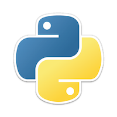

Python contribution layer for Spacemacs
Table of ContentsClose

1 Description
This layer adds support for the Python language.
1.1 Features:
- Auto-completion using anaconda-mode
- Code Navigation using anaconda-mode
- Documentation Lookup using anaconda-mode and pylookup
- Test Runners using nose.el or pytest
- Virtual Environment using pyvenv and pyenv
- semantic mode is enabled
- PEP8 compliant formatting via YAPF
- Suppression of unused import with autoflake
- Use the
%key to jump between blocks with evil-matchit
2 Install
2.1 Layer
To use this contribution add it to your ~/.spacemacs
(setq-default dotspacemacs-configuration-layers '(python))
2.2 Test runner
Both nose and pytest are supported. By default nose is used.
To choose your test runner set the layer variable python-test-runner to
either nose or pytest.
The root of the project is detected with a .git directory or a setup.cfg file.
(setq-default dotspacemacs-configuration-layers '((python :variables python-test-runner 'pytest)))
2.3 Anaconda dependencies
anaconda-mode tries to install the dependencies itself but sometimes
it does not work and you may encounter the following message when
opening a python buffer:
Blocking call to accept-process-output with quit inhibited!!
To fix this, install the anaconda-mode anaconda-deps by hand:
pip install jedi==0.8.1 json-rpc==1.8.1 service_factory==0.1.2
Source: https://github.com/proofit404/anaconda-mode#issues
If you are facing errors such as "Unable to run anaconda-mode server", try
setting your PYTHONPATH as explained at
https://github.com/proofit404/anaconda-mode#pythonpath
2.4 Automatic buffer formatting on save
To enable automatic buffer formatting on save with YAPF set the variable
python-enable-yapf-format-on-save to t.
(setq-default dotspacemacs-configuration-layers '( (python :variables python-enable-yapf-format-on-save t)))
2.5 autoflake
To be able to suppress unused imports easily, install autoflake:
pip install autoflake
2.6 pylookup
To use pylookup on SPC m h H, make sure you update the database first, using
SPC : pylookup-update.
3 Key Bindings
3.1 Inferior REPL process
Start a Python or iPython inferior REPL process with SPC m s i.
If ipython is available in system executable search paths, ipython
will be used to launch python shell; otherwise, default python
interpreter will be used. You may change your system executable
search path by activating a virtual environment.
Send code to inferior process commands:
| Key Binding | Description |
|---|---|
SPC m s b |
send buffer and keep code buffer focused |
SPC m s B |
send buffer and switch to REPL in insert mode |
SPC m s f |
send function and keep code buffer focused |
SPC m s F |
send function and switch to REPL in insert mode |
SPC m s i |
start inferior REPL process |
SPC m s r |
send region and keep code buffer focused |
SPC m s R |
send region and switch to REPL in insert mode |
CTRL+j |
next item in REPL history |
CTRL+k |
previous item in REPL history |
3.2 Running Python Script in shell
To run a Python script like you would in the shell press SPC m c c
to start the Python script in comint mode. This is useful when working with
multiple Python files since the REPL does not reload changes made in other
modules.
| Key Binding | Description |
|---|---|
SPC m c c |
Execute current file in a comint shell |
SPC m c C |
Execute current file in a comint shell and switch to it in insert state |
Note: With the universal argument SPC u you can enter a new
compilation command.
3.3 Testing
Test commands start with m t:
| No Debug | Description |
|---|---|
SPC m t a |
launch all tests of the project |
SPC m t b |
launch all tests of the current buffer (same as module) |
SPC m t m |
launch all tests of the current module |
SPC m t s |
launch all tests of the current suite (only with nose) |
SPC m t t |
launch the current test (function) |
| Debug | Description |
|---|---|
SPC m t A |
launch all tests of the project in debug mode |
SPC m t B |
launch all tests of the current buffer (module) in debug mode |
SPC m t M |
launch all tests of the current module in debug mode |
SPC m t S |
launch all tests of the current suite in debug mode (only with nose) |
SPC m t T |
launch the current test (function) in debug mode |
3.4 Refactoring
| Key Binding | Description |
|---|---|
SPC m r i |
remove unused imports with autoflake |
3.5 Other Python commands
| Key Binding | Description |
|---|---|
SPC m = |
Reformat the buffer according to PEP8 using YAPF |
SPC m d b |
toggle a breakpoint |
SPC m g g |
go to definition using anaconda-mode-find-definitions (C-o to jump back) |
SPC m g a |
go to assignment using anaconda-mode-find-assignments (C-o to jump back) |
SPC m g u |
navigate between usages with anaconda-mode-find-references |
SPC m h d |
look for documentation using helm-pydoc |
SPC m h h |
quick documentation using anaconda |
SPC m h H |
open documentation in firefox using pylookup |
SPC m v s |
activate a virtual environment with pyenv |
SPC m v u |
deactivate a virtual environment with pyenv |
SPC m V |
activate a virtual environment with pyvenv |
4 Configuration
4.1 Fill column
If you want to customize the fill column value, use something like this inside the user-init function in your .spacemacs:
(setq python-fill-column 99)